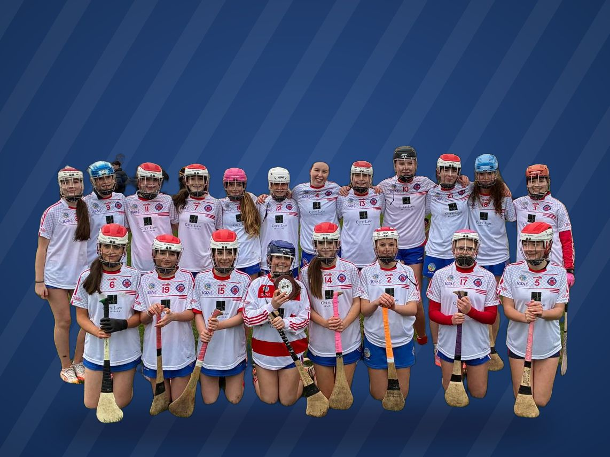

Clontarf GAAGirls 2012 · Football & Camogie
Féile is two weekends this year, and both matter just as much: football on the weekend of Saturday 10 April and camogie on the weekend of Saturday 8 May 2027. From now until then the girls follow one plan: team training, group S&C, and short home sessions in between. Here's how it fits together, why it's built this way, and how you can help.

What we're aiming for, and why there's work at home
Several games over each weekend, four weeks apart. We want every girl able to play hard for every minute, and just as sharp for camogie in May as for football in April.
Strength, landing and warm-up work based on the GAA's own Activate programme, which is designed to cut knee and ankle injuries.
Wall ball for football and camogie on most days, with the weaker side getting twice the reps.
Pitch and hall time is limited over the winter, and Christmas is a two-week gap. Short sessions at home, 20 to 45 minutes, fill the gaps so nobody starts from scratch in January.
Little and often. None of this is about hammering the girls. The home work is short, mostly easy, and built around school and team training. A missed session costs very little.
Weekday home work is always in the evening, after school
The week changes on its own. The diary reads the team's sessions and matches straight from CoachSmart and rebuilds the home work around them. The day before a match is light, the day after is stretching only, and on a busy weekend the long run moves to Friday.
Each block a little harder than the last, then we ease off to arrive fresh for each Féile weekend
Learn every exercise properly. Build the habit of wall ball and easy running.
No team sessions from 21 Dec to 3 Jan. Short home sessions, with 24 to 27 Dec completely off.
More strength rounds, longer easy runs, skills from further out.
Match-shaped running and skills when tired.
Easter camp 30 Mar to 1 Apr, then less work at the same speed. Two full rest days before Féile football.
Two easy days, two weeks of sharp camogie work, then the same taper. Two full rest days before Féile camogie.
Two runs a week, and most of them easy
Gaelic games are hard running with short breaks, again and again. The engine behind that is an aerobic base: a strong heart and lungs that let a player recover quickly between efforts and stay sharp late in a game.
The girls already get plenty of hard running at team training. So the runs at home are mostly easy, at chat pace: if she can talk in full sentences, she's at the right speed. Walk breaks are fine. Easy minutes build the base without adding to the knock-on from team sessions.
The minutes go up a little each week, never in big jumps. Running on grass or park paths in proper runners is better for growing legs than footpaths.
All at chat pace, plus 4 short strides.
Four easy runs. A family run or a parkrun counts.
Thursday becomes a fartlek: 6 x 1 minute a bit quicker.
Last 10 minutes steady. Thursday is match-shaped sprints.
coachsmart.app/clontarf-gaa/feile27, on her phone
A timeline of what's on today: team sessions, a run or home session, or rest. Swipe or tap the week strip to look ahead.
Team sessions and matches come straight from the team's CoachSmart events. Weeks the coaches haven't set up yet show the usual week, marked "Planned".
"Show what to do" opens each session with a tick box per exercise. Ticks are saved on that phone only. Nobody else sees them.
Every exercise has a Watch link. Strength and landing work goes to the GAA Activate videos, and the skills open a YouTube demo search.
Benchmark checks on 2 Jan, 26 Feb and 2 Apr: a plank, a broad jump, a shuttle run and a minute of wall ball each code. She writes her scores down and only ever compares them with her own last scores. They're never ranked.
Principles, not menus. No diets, ever. More in the Fuel for Féile guide.
A water bottle to school and to every session. Energy drinks are not suitable for under-16s.
About 9 hours a night. The guideline for teenagers is 8 to 10, and girls training most days do better at the top end. Late training finishes make this hard. Phones out of the bedroom is the single biggest help. A tired week is a reason to do the stretching only.
Please tell a coach about any of these
Encourage it, don't police it
A gable wall, garage or ball alley, and a 2 x 3 m clear spot for exercises. Use a soft ball near windows.
Hold her ankles for Nordic curls, point left or right for reactive sprints, or play her at Wall 21.
The Saturday easy run is perfect company for a parent or sibling. Chat pace suits everyone.
School, exams and family plans come first. Missing a session is fine, so never double up to catch up.
Mostly things she already has
| Item | Used for | |
|---|---|---|
| Football (size 4 or 5) | Essential | Wall kicks, solo, hand pass |
| Hurl, helmet, 1 or 2 sliotars | Essential | Wall ball, striking, daily touches |
| Tennis ball | Essential | Hand-eye drills indoors |
| Exercise mat | Essential | Strength and stretching. A towel works |
| Proper running shoes | Essential | The two weekly runs |
| 4 to 6 cones | Useful | Agility and sprints. Shoes or bottles work |
| Skipping rope | Useful | Warm-ups and footwork |
No. Just pick up with today's plan. Doubling up is how injuries happen.
Rest until she's well, then start back with the easy run and the skills, and let a coach know. With an injury, follow the physio's advice over the diary.
Count those as sessions. On a day she has another sport, skip the home session. If a week is very full, drop the Friday session first and keep the easy runs.
Team sessions come from CoachSmart, so the coaches' CoachSmart event is always the one to trust. If a week shows "Planned", the coaches haven't put it into CoachSmart yet.
No. Ticks are saved on her phone only and are just for her.
Strength and landing links go to the GAA's Activate videos. Skill links open a YouTube search for that drill, so it's worth watching the first one with her. If the coaches pick favourite videos, we'll swap those in.